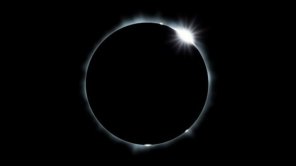
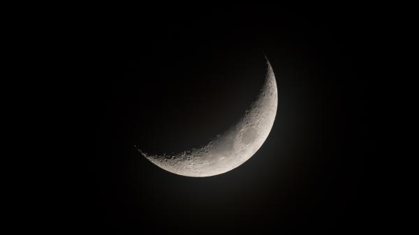
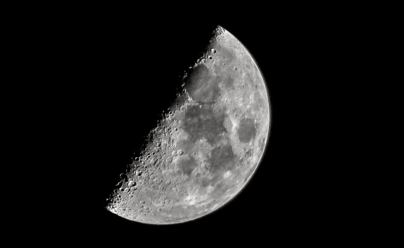
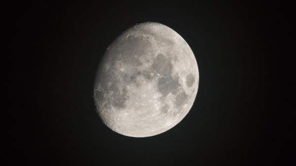
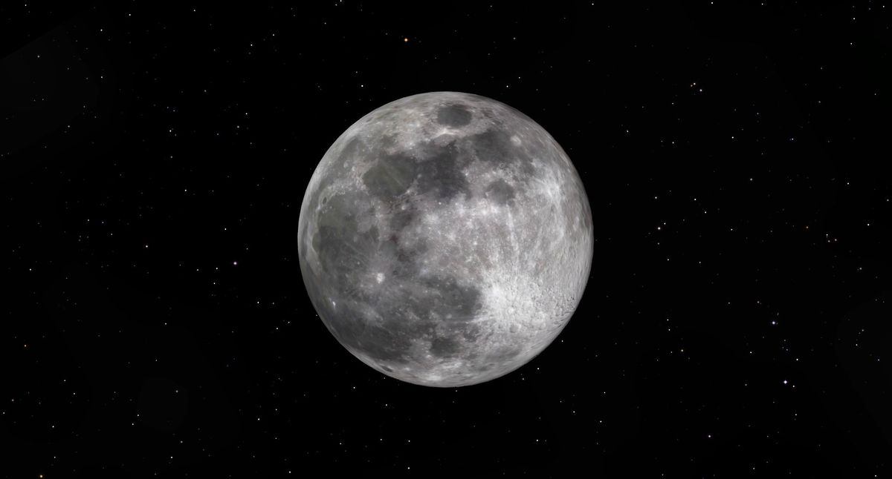
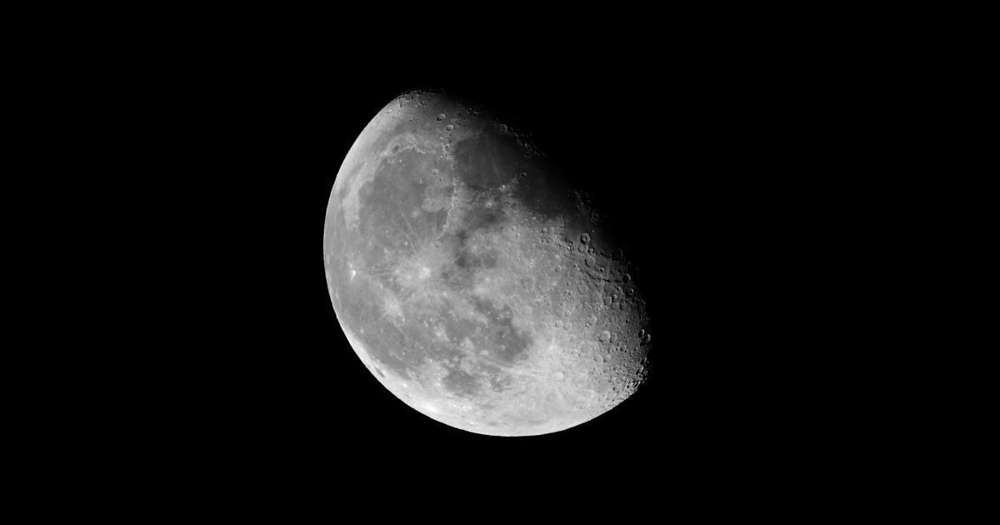
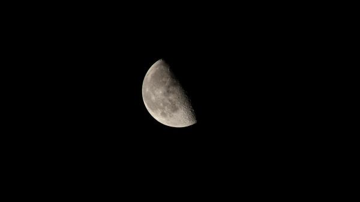
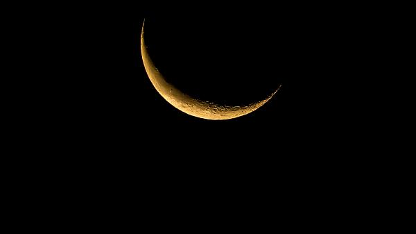
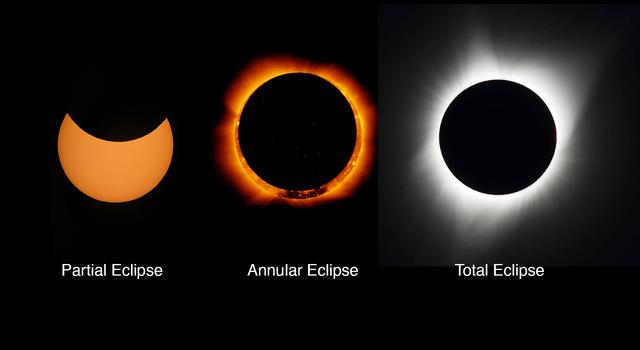

What is Moon?
A moon, also known as a natural satellite, is a celestial body that orbits a planet or another planetary body. Unlike planets, moons do not generate their own light; instead, they reflect the light of their parent planet or star, making them visible in the night sky. Moons can vary widely in size, composition, and appearance, and they are found orbiting planets throughout the solar system and beyond.
Moons come in various sizes and types. Some are large, like Jupiter’s moon Ganymede, which is larger than the planet Mercury, while others are much smaller, like the numerous tiny moons orbiting asteroids. The composition of moons can also differ: some are rocky, some are icy, and some have atmospheres or surface features such as craters, mountains, and volcanic activity.
The formation of moons can occur through different processes. Some moons are believed to have formed alongside their parent planets from the same protoplanetary disk of gas and dust. Others might have formed elsewhere in the solar system and were later captured by the planet's gravity. Some moons, particularly the large ones, might have formed from debris created by collisions between their parent planet and other celestial objects.
Characteristics of the Moon of Earth
Composition and Surface
The Moon's surface is covered with a layer of fine dust and rocky debris called regolith. This regolith is composed of minerals such as silicates, including plagioclase, pyroxene, and olivine. The Moon’s surface features include vast plains known as maria (singular: mare), which are large, dark, basaltic plains formed by ancient volcanic eruptions, and highland regions called terrae, which are lighter in color and more cratered.
Atmosphere
The Moon has a very tenuous atmosphere, known as an exosphere. It is extremely thin compared to Earth’s atmosphere and consists of trace amounts of gases such as helium, neon, and hydrogen. This lack of a substantial atmosphere means the Moon does not have weather, wind, or significant temperature regulation, leading to extreme temperature variations between day and night.
Gravity
The Moon’s gravity is about one-sixth that of Earth’s. This lower gravity affects the behavior of objects on the Moon's surface, allowing astronauts to hop and move more easily than on Earth. It also influences the tidal forces that the Moon exerts on Earth.
Orbital and Rotational Characteristics
The Moon orbits Earth at an average distance of about 384,400 kilometers (238,855 miles). It takes approximately 27.3 days to complete one orbit around Earth, a period known as the sidereal month. Interestingly, the Moon rotates on its axis in the same amount of time it takes to orbit Earth, which is why the same side of the Moon always faces Earth. This synchronous rotation results in the far side of the Moon being hidden from view.
Geological Features
The Moon’s surface is marked by impact craters from collisions with asteroids and comets. Some notable features include the Imbrium Basin, the largest impact basin on the Moon, and the Tycho crater, known for its prominent ray system. Lunar highlands and maria are key features visible through telescopes.
How do Moons form?
Moons are fascinating celestial objects that orbit planets, ranging from small, irregularly shaped bodies to large, spherical worlds. The formation of moons is a complex and intriguing process influenced by various factors in the cosmos. Understanding how moons form helps us grasp the dynamic nature of planetary systems and the interactions between celestial bodies. Moons can emerge through several key processes, each contributing to their diverse characteristics and orbits. These processes are shaped by the gravitational forces, material distribution, and evolutionary history of the planets and their surrounding environments. Exploring these formation mechanisms provides insight into the origins of our own Moon, as well as the moons of other planets in our Solar System and beyond.
Capture Theory
The Capture Theory is one of the leading explanations for the formation of moons around planets. According to this theory, moons form when a celestial body, typically an asteroid or a comet, is captured by the gravitational pull of a planet.
Formation and Initial Conditions
For a celestial object to become a moon through capture, it must first be in the vicinity of a planet with enough gravitational influence. These objects are often small, irregularly shaped bodies that orbit the Sun or another star. They travel through space on their own trajectories and can be composed of rock, ice, or a mixture of both.
The Capture Process
- As an object approaches a planet, the planet's gravity begins to exert a force on it. If the object's speed is low enough, it can be drawn into the planet's gravitational field rather than continuing on its original path. The key factor here is the velocity of the incoming object; if it’s too fast, the object might just pass by the planet or continue orbiting the Sun.
- If the object is captured, it doesn’t simply start orbiting the planet immediately. The interaction between the object and the planet's gravity can result in complex orbital dynamics. The object's trajectory is altered by tidal forces—gravitational interactions that can affect the object's speed and path. During this phase, the object may go through a series of chaotic orbits before settling into a stable orbit around the planet.
- Once captured, the object can become a stable moon if it settles into a consistent orbit. The process of stabilization often involves the object’s orbit gradually circularizing due to gravitational interactions and possible collisions or interactions with other moons or the planet’s rings.
Examples
Several moons in our solar system are believed to have formed through the Capture Theory. For instance,Phobos and Deimos, the two moons of Mars, are small and irregularly shaped, leading scientists to believe they may be captured asteroids or comets. Their unusual orbits and compositions support this theory. Triton, Neptune's largest moon, is another prime candidate for capture. It has a retrograde orbit (orbiting in the opposite direction to Neptune’s rotation), suggesting it was captured from another part of the solar system.
Giant Impact Theory
The Giant Impact Theory is a widely accepted explanation for the formation of moons, particularly in the context of large moons and planetary systems. This theory proposes that moons form from the debris ejected when a massive celestial body collides with a planet.
Formation and Initial Conditions
The Giant Impact Theory posits that moons are born from the aftermath of a colossal collision between a planet and another large celestial object, such as a protoplanet or a large asteroid. This theory is especially pertinent for explaining the formation of large moons and moon systems around planets.
The Impact Process
- The formation begins with a high-energy collision between a planet and a large impactor. This impact is so significant that it ejects a substantial amount of material from the planet’s surface and the impactor itself. The energy released during this collision is immense, often equivalent to the explosion of billions of nuclear bombs.
- The collision produces a cloud of debris that consists of vaporized and molten material from both the planet and the impactor. This material is expelled into orbit around the planet. The ejected debris forms a disc around the planet, much like a ring system.
- Over time, the debris in this disc begins to cool and coalesce due to gravitational forces. Particles collide and stick together, gradually forming larger and larger clumps. Eventually, these clumps merge to form a single, larger body—a moon. This process can take several years to millions of years.
- Over time, the debris in this disc begins to cool and coalesce due to gravitational forces. Particles collide and stick together, gradually forming larger and larger clumps. Eventually, these clumps merge to form a single, larger body—a moon. This process can take several years to millions of years.
Examples
The Giant Impact Theory provides a plausible explanation for several notable moons in our solar system. One of the most famous applications of the Giant Impact Theory is the origin of Earth’s Moon. It is believed that a Mars-sized body, often referred to as Theia, collided with the early Earth about 4.5 billion years ago. The debris from this collision eventually coalesced to form the Moon. The irregular orbits and diverse compositions of some of Uranus’s moons suggest they might have formed from the debris of a giant impact with the planet. Some scientists suggest that Rhea could have formed from debris ejected by a giant impact early in Saturn’s history.
Fission Theory
The Fission Theory proposes that moons form when a planet or a large celestial body splits apart, with some of the ejected material coalescing into a moon. This theory is based on the idea that a planet's rapid rotation or other forces can cause it to break apart and release debris, which then forms a satellite.
Concept and Formation
- The Fission Theory suggests that a planet or large celestial body originally spins at a very high rate. This intense rotation could be caused by various factors, including the planet's formation process or subsequent angular momentum changes.
- As the planet spins faster, it experiences increasing centrifugal forces. These forces push outward against the planet's gravity. When the planet’s rotation reaches a critical speed, it may become unstable. This instability causes the planet to begin breaking apart.
- The planet's high rotational speed leads to the ejection of material from its equatorial region. This ejected material, which consists of rock and other planetary debris, is propelled into orbit around the planet. This process can result in the formation of a ring or a disc of debris.
- Over time, the debris in orbit around the planet starts to cool and coalesce due to gravitational attraction. Particles collide and stick together, forming larger bodies. One or more of these bodies can become a stable moon orbiting the planet. The remaining debris may form a ring system or be dispersed into space.
Examples
The Fission Theory is often used to explain the origin of some of the moons in our solar system, particularly those of Saturn and Mars. In addition to the Giant Impact Theory, the Fission Theory has also been considered for explaining the origin of Earth’s Moon. According to this theory, the early Earth could have spun so rapidly that it ejected a portion of its mass, which then formed the Moon. However, this explanation faces challenges related to the required rotational speed and other constraints. The Fission Theory has been proposed to explain the formation of Saturn’s moon Rhea and its ring system. The idea is that Rhea might have formed from debris ejected by a rapid rotation or collision event in Saturn’s early history. The Fission Theory has also been considered for Mars’ moons. It is thought that these small moons might have formed from material ejected by a massive impact or rapid rotation in Mars’ past.
Accretion Theory
The Accretion Theory is one of the principal explanations for how moons form. It describes a process where moons develop from a gradual accumulation of material in orbit around a planet. This theory hinges on the idea that moons form through the accumulation of dust, gas, and other debris that coalesces over time.
Concept and Formation
- According to the Accretion Theory, moons form from a protoplanetary disk—a rotating disk of gas, dust, and debris that surrounds a planet during its early stages of development. This disk is typically formed from material that is left over after the formation of the planet itself.
- Within this disk, tiny particles of dust and ice start to stick together due to gravitational attraction and electrostatic forces. As these particles collide and merge, they form larger and larger clumps of material. This process, known as accretion, continues over time.
- Some of the accumulated material may initially form rings around the planet. These rings are made up of a multitude of particles orbiting the planet. Over time, the material in these rings can start to coalesce into larger objects.
- As the material in the protoplanetary disk continues to come together, it eventually forms larger bodies. These bodies can coalesce into a single, stable moon or multiple moons, depending on the amount of material and the dynamics of the disk. The moon forms from the material that was once part of the disk, and its composition reflects the debris from which it was created.
- Once a moon forms, it settles into a stable orbit around the planet. The moon’s gravitational influence helps to clear out remaining debris in its orbit, resulting in a more stable and circular path around the planet.
Examples
While the Giant Impact Theory is more commonly cited for the origin of Earth’s Moon, the Accretion Theory also provides a useful framework for understanding how some moons might form from circumplanetary disks. The theory suggests that if Earth had a disk of material around it after a significant impact, the Moon could have formed through the gradual accretion of this material. The Accretion Theory is often used to explain the formation of Jupiter’s Galilean moons—Io, Europa, Ganymede, and Callisto. These moons are thought to have formed from the protoplanetary disk that surrounded Jupiter during its early history. Similarly, Saturn’s moons, including Titan and Enceladus, are believed to have formed from a protoplanetary disk. The theory helps explain why these moons have diverse compositions and why some have substantial atmospheres and geological activity.
Phases of the Moon of the Earth
New Moon
During the New Moon phase, the Moon is positioned between Earth and the Sun. The side of the Moon that is illuminated by the Sun is facing away from Earth, making the Moon invisible from our perspective. This phase marks the beginning of the lunar cycle.
Waxing Crescent
Following the New Moon, a small sliver of the Moon starts to become visible as a crescent shape. The illuminated portion increases over time, and this phase is known as the waxing crescent. The crescent grows larger until it reaches the half-lit appearance.
First Quarter
In the First Quarter phase, half of the Moon's surface facing Earth is illuminated, and the other half is in shadow. This phase occurs when the Moon has completed a quarter of its orbit around Earth. It is called "first quarter" because it is the first time the Moon appears half-illuminated in the lunar cycle.
Waxing Gibbous
The Waxing Gibbous phase follows the First Quarter. More than half of the Moon is illuminated, but it is not yet fully visible as a complete circle. The term “gibbous” refers to the shape of the Moon being more than half but less than full.
Full Moon
During the Full Moon phase, the entire face of the Moon visible from Earth is fully illuminated by the Sun. This occurs when Earth is between the Moon and the Sun, allowing the Moon’s entire near side to be bathed in sunlight. This phase is the midpoint of the lunar cycle.
Waning Gibbous
After the Full Moon, the Moon begins to wane, or decrease in illumination. The Waning Gibbous phase is when more than half of the Moon’s surface is still illuminated but decreasing. The term “waning” indicates that the amount of visible light is decreasing.
Last Quarter
The Last Quarter phase, also known as the Third Quarter, occurs when the Moon is again half-illuminated, but this time the opposite half compared to the First Quarter. It marks three-quarters of the way through the lunar cycle.
Waning Crescent
In the Waning Crescent phase, only a small sliver of the Moon is visible before it returns to the New Moon phase. The illuminated portion continues to shrink until it is no longer visible from Earth.
Eclipses
Eclipses are fascinating astronomical events that occur when one celestial body moves into the shadow of another, leading to a temporary obscuration of light. Eclipses can happen with the Moon, the Earth, and the Sun, and they are classified into two main types: solar and lunar eclipses.
Solar Eclipse
A solar eclipse happens when the Moon passes between the Earth and the Sun, blocking out the Sun's light either partially or entirely. This event can only occur during the New Moon phase, when the Moon is positioned directly between Earth and the Sun. The extent of the eclipse depends on the alignment and distances between the three bodies.
Total Solar Eclipse
A total solar eclipse occurs when the Moon is close enough to Earth in its orbit that it completely covers the Sun. This total coverage creates a period of darkness during the day, known as totality, and can last from a few seconds to several minutes. During totality, the Sun’s corona (its outer atmosphere) becomes visible, giving the sky a dramatic and eerie appearance. Total eclipses are relatively rare for any given location on Earth.
Partial Solar Eclipse
In a partial solar eclipse, only a part of the Sun is obscured by the Moon. This happens when the Moon’s shadow does not fully cover the Sun from the perspective of a specific location on Earth. The amount of the Sun covered can vary, with the eclipse being more or less extensive depending on how closely the Moon’s shadow aligns with a particular location.
Annual Solar Eclipse
An annular solar eclipse occurs when the Moon is farther away from Earth in its orbit, and thus appears smaller in the sky. As a result, it cannot completely cover the Sun, leaving a ring of the Sun’s surface visible around the Moon. This ring is known as the "ring of fire." Annular eclipses are less dramatic than total eclipses but still provide a striking visual effect.
Lunar Eclipses
A lunar eclipse occurs when the Earth comes between the Sun and the Moon, casting a shadow on the Moon. This event can only take place during the Full Moon phase when the Moon is on the opposite side of Earth from the Sun.
Total Lunar Eclipse
In a total lunar eclipse, the entire Moon moves into Earth's umbra (the central, darkest part of its shadow). As the Moon passes through the umbra, it can take on a reddish hue, known as a "blood moon," due to the scattering of sunlight by Earth's atmosphere. This reddening effect is caused by the same phenomenon that makes sunsets appear red. Total lunar eclipses can last for several hours, with the totality phase lasting from a few minutes to over an hour.
Partial Lunar Eclipse
A partial lunar eclipse occurs when only a portion of the Moon enters Earth's umbra. During this eclipse, part of the Moon will appear darkened, while the remainder remains illuminated by sunlight. The visible shadow progresses across the Moon’s surface, creating a dramatic contrast between the darkened and illuminated areas.
Penumbral Lunar Eclipse
In a penumbral lunar eclipse, the Moon passes through the Earth's penumbra (the outer, lighter part of its shadow). The shading caused by the penumbra is subtle and often hard to detect with the naked eye. The Moon might appear slightly dimmed or have a faint grayish tint during this type of eclipse.

Moons of Other Planets
Jupiter’s Moon
Jupiter, the largest planet in our solar system, has a diverse array of moons, with over 90 confirmed to date. The most notable among them are the Galilean moons — Io, Europa, Ganymede, and Callisto—discovered by Galileo Galilei in 1610. These moons are not only significant due to their size but also due to their unique geological and atmospheric characteristics.
-
Io is one of Jupiter's moons and stands out as the most geologically active body in the solar system. It features over 400 active volcanoes, with eruptions that can spew lava and volcanic materials hundreds of kilometers into space. This intense volcanic activity is driven by tidal forces from Jupiter's gravity, which cause significant internal friction and heating.
The surface of Io is constantly reshaped by these eruptions, leading to a landscape covered in sulfur dioxide frost, sulfur, and lava flows. The diverse colors of the surface—ranging from yellow to red and black—reflect different volcanic deposits. Notable volcanoes include Pele, known for its massive lava plumes, and Loki, a major center of volcanic activity.
Io’s thin atmosphere, mainly composed of sulfur dioxide, is continuously replenished by volcanic outgassing. This atmosphere interacts with Jupiter’s magnetosphere, contributing to the moon's distinctive auroras and influencing the planet’s magnetic environment. The ongoing volcanic activity and dynamic surface of Io make it a significant subject of study in planetary science. -
Europa, one of Jupiter's largest moons, is renowned for its intriguing ice-covered surface and potential subsurface ocean. Beneath its icy crust, which is estimated to be 15 to 25 kilometers thick, lies a global ocean of liquid water. This ocean is thought to be in contact with Europa’s rocky mantle, creating conditions that might be suitable for life.
The surface of Europa is characterized by a network of ridges and grooves caused by tectonic activity, suggesting that the ice shell is shifting and reforming. The moon’s icy surface is also marked by numerous fractures and dark streaks, which are believed to be the result of upwelling of material from the subsurface ocean.
Europa’s thin atmosphere is primarily composed of oxygen, though it is too tenuous to support human life. The moon’s surface and subsurface environment interact with Jupiter’s powerful magnetic field, contributing to auroral activity and influencing the moon’s geology. -
Ganymede, Jupiter's largest moon and the largest moon in the solar system, is a fascinating world with several unique features. It has a diameter of about 5,268 kilometers (3,273 miles), making it even larger than the planet Mercury.
One of Ganymede's most remarkable characteristics is its magnetic field, which is unique among moons. This magnetic field suggests that Ganymede has a partially liquid iron or iron-sulfide core, contributing to its internal dynamics.
Ganymede's surface is a mix of two types of terrain: dark regions covered in impact craters and bright regions marked by ridges and grooves. These bright areas are thought to be relatively young and caused by tectonic activity that has stretched and broken the moon's icy crust, creating a landscape of ice ridges.
Beneath its icy surface, which is up to 150 kilometers (93 miles) thick, Ganymede is believed to have a subsurface ocean that could contain more water than all of Earth's oceans combined. This ocean is separated from the surface by a thick layer of ice, and its presence suggests the potential for interesting geologic processes.
The moon's thin atmosphere is mostly composed of oxygen, but it is far too thin to support human life. Ganymede's magnetic field interacts with Jupiter's powerful magnetosphere, leading to complex magnetic interactions and auroral phenomena. -
Callisto, one of Jupiter's largest moons, is an intriguing celestial body with distinct characteristics that set it apart from its neighbors. It is the third-largest moon in the solar system, with a diameter of about 4,821 kilometers (2,995 miles).
Callisto's surface is one of the oldest and most heavily cratered in the solar system, indicating minimal geological activity over billions of years. Its surface is covered with numerous impact craters of varying sizes, creating a rugged and ancient landscape. The moon's surface also features large, dark plains interspersed with bright, icy regions, giving it a varied appearance.
One of Callisto's most significant features is its likely subsurface ocean. Beneath its icy crust, which could be up to 150 kilometers (93 miles) thick, there is strong evidence suggesting the presence of a salty ocean. This subsurface ocean could be in contact with the moon’s rocky mantle, potentially creating conditions that might support microbial life.
Unlike some of Jupiter’s other moons, Callisto lacks significant internal geological activity. It does not exhibit the same level of tectonic or volcanic processes, making its surface relatively stable but also ancient. The moon’s low levels of internal heat contribute to its relatively unchanged surface.
Callisto has a very thin atmosphere composed mostly of carbon dioxide and traces of other gases. Its interaction with Jupiter’s magnetosphere results in weak auroras at its poles, but these are less intense than those observed on moons like Io or Ganymede.
Saturn's Moons
Saturn has at least 83 moons, with Titan and Enceladus being the most intriguing due to their potential for supporting life and unique features.
-
Titan, Saturn’s largest moon and the second-largest moon in the solar system, is a fascinating and enigmatic world with unique characteristics. Its diameter is about 5,151 kilometers (3,200 miles), making it larger than the planet Mercury.
One of Titan's most striking features is its dense atmosphere, which is primarily composed of nitrogen (about 95%) with traces of methane (around 5%) and other gases. This thick atmosphere is about 1.5 times the pressure of Earth’s atmosphere at sea level, giving Titan a hazy, orange-brown appearance. The atmospheric pressure and composition create a greenhouse effect, leading to surface temperatures around -179 degrees Celsius (-290 degrees Fahrenheit), which is colder than anywhere on Earth.
Titan's surface is equally intriguing, with lakes and rivers of liquid methane and ethane. These hydrocarbons form a cycle similar to Earth's water cycle, with rain, rivers, and lakes of methane on the surface. The presence of these liquid hydrocarbons creates a dynamic and diverse landscape, including vast, flat plains and large, mountain-like ice formations.
Beneath its thick atmosphere, Titan’s surface is covered by a layer of water ice, which may be floating on a subsurface ocean of liquid water. This ocean is believed to be in contact with Titan’s rocky core, creating a potential environment for life.
Unlike many other moons, Titan does not show much geological activity, but it does have some evidence of cryovolcanism, where icy materials are expelled from beneath the surface rather than molten rock. The surface features, including the large lakes and channels, suggest a complex and possibly evolving geology.
Titan is also of great interest to scientists because its thick atmosphere and potential subsurface ocean make it a key target in the search for extraterrestrial life. The moon’s unique combination of atmospheric chemistry, surface liquids, and potential internal ocean provides a rich environment for studying prebiotic chemistry and the conditions that could support life. -
Enceladus, one of Saturn’s moons, is a small but fascinating celestial body with some remarkable features. It measures about 504 kilometers (313 miles) in diameter, making it one of the smaller moons in the solar system.
One of Enceladus' most intriguing aspects is its icy surface, which is highly reflective due to its fresh, clean ice. This surface reflects nearly all the sunlight that hits it, giving the moon a bright, shining appearance. The surface is marked by a variety of features, including smooth plains, ridges, and crevices.
Beneath its icy crust, Enceladus has a subsurface ocean of liquid water. This ocean is believed to be in contact with the moon’s rocky core, which could potentially create conditions favorable for life. The existence of this ocean was confirmed by data from NASA’s Cassini spacecraft, which observed plumes of water vapor and ice particles erupting from the moon’s south polar region. These geysers shoot material into space, contributing to Saturn’s E-ring.
The plumes, or geysers, are one of Enceladus’ most exciting features. They suggest that there is significant internal heat driving the eruption of water vapor and ice from the subsurface ocean. This internal heat likely results from tidal forces exerted by Saturn's gravity, which causes friction and heat within the moon’s interior.
In addition to the plumes, Cassini also detected organic compounds in the ejected material, which are complex molecules that might play a role in the chemistry of life. This discovery makes Enceladus a key focus in the search for extraterrestrial life, as the moon's subsurface ocean and the presence of organic compounds could provide the necessary ingredients for life.
Mars' Moons
Mars has two small moons, Phobos and Deimos. They are irregularly shaped and much smaller than Earth's moon.
-
Phobos is the larger of Mars' two moons, but still relatively small compared to other moons in the solar system. It has a diameter of about 22.4 kilometers (14 miles) and a highly irregular shape, which gives it a somewhat lumpy and uneven appearance.
Phobos orbits Mars at an exceptionally close distance of approximately 6,000 kilometers (3,700 miles) from the planet's surface. This proximity means it has one of the shortest orbital periods of any moon, completing a full orbit around Mars in just about 7 hours and 39 minutes. As a result, Phobos rises in the west and sets in the east on Mars, opposite to what we experience on Earth.
The surface of Phobos is heavily cratered, with many small to medium-sized craters and grooves. The most prominent feature is Stickney Crater, which is about 9 kilometers (5.6 miles) in diameter and nearly half the size of the moon itself. This large impact crater dominates the moon's surface and is surrounded by a complex pattern of grooves and ridges, which are believed to have been formed by stress and fracturing due to tidal forces from Mars.
Phobos is composed mainly of carbonaceous material, including silicates and metals. Its surface is covered with a layer of regolith, a mix of dust and rocky debris. The moon’s composition and density suggest it may be a captured asteroid or a fragment of a larger body that was broken apart.
Due to its close orbit, Phobos is subject to strong tidal forces from Mars, which are causing it to gradually spiral inward towards the planet. This inward drift is leading to a potential future scenario where Phobos might either break apart into a ring system around Mars or collide with the planet in about 50 million years.
Phobos is of significant interest to scientists due to its unusual features and rapid orbit. It is considered a potential target for future exploration missions to understand more about its origin and composition, as well as the possibility of using it as a base for further exploration of Mars.
-
Deimos is the smaller of Mars' two moons, with a diameter of about 12.4 kilometers (7.7 miles). Its shape is irregular and somewhat elongated, resembling a lumpy potato. This irregularity is common among many small moons and asteroids.
Deimos orbits Mars at a distance of approximately 20,000 kilometers (12,400 miles) from the planet's surface. It has a slightly longer orbital period than Phobos, completing an orbit around Mars in about 30.3 hours. Due to this orbit, Deimos rises in the east and sets in the west on Mars, similar to the motion of the Sun and Moon on Earth.
The surface of Deimos is relatively smooth compared to Phobos, with fewer large craters. The moon is covered by a layer of fine dust and debris called regolith. The most prominent surface feature is a series of grooves and ridges, which may have been caused by past impacts or internal stresses. Deimos has fewer and smaller craters compared to its larger counterpart, Phobos.
Deimos is composed of a mixture of carbonaceous material, including silicates and possibly ice. The moon's surface is covered with a layer of regolith, which is similar to Phobos in composition. Its low density suggests that it may be a captured asteroid or a remnant of a larger body.
Deimos has a nearly synchronous rotation, meaning that it always shows the same face toward Mars. This synchronous rotation is due to its orbital period being very close to its rotational period, a common characteristic of small moons.
Deimos is less geologically active compared to Phobos and has a smoother surface. However, it is of interest for scientific research due to its potential as a captured asteroid or a fragment of a larger body. Understanding Deimos can provide insights into the formation and evolution of Mars' moons and the early solar system. It also represents a potential target for future exploration missions, offering opportunities to study its surface and composition up close.
Lunar Explorations and Missions
Exploration and missions on moons involve sending spacecraft and instruments to study natural satellites orbiting planets. These efforts aim to uncover information about the moons' composition, surface features, and potential for life. Missions can include flybys, orbiters, landers, and rovers, each designed to gather detailed data and insights. The goal is to enhance our understanding of these moons, their environments, and their role within the solar system.
Luna 2 (1959)
Launched by the Soviet Union on September 12, 1959, Luna 2 was a pioneering mission in the annals of space exploration. This spacecraft became the first human-made object to impact the Moon, marking a significant milestone in space history. As the second spacecraft in the Luna program, Luna 2’s primary goal was to confirm that a spacecraft could successfully reach the Moon. The mission provided invaluable data about the Moon's surface and the space environment. Its impact demonstrated that interplanetary travel was feasible, setting the stage for future missions to the Moon and beyond. The successful impact of Luna 2 was a crucial step in humanity’s journey to explore the Moon and other celestial bodies.
Apollo 11 (1969)
Apollo 11, launched by NASA on July 16, 1969, stands as one of the most iconic missions in the history of space exploration. This mission was the first manned mission to land on the Moon, with astronauts Neil Armstrong and Edwin "Buzz" Aldrin setting foot on the lunar surface on July 20, 1969, while Michael Collins orbited the Moon in the Command Module. Armstrong’s famous words, "That's one small step for [a] man, one giant leap for mankind," underscored the monumental achievement of this mission. Apollo 11 provided extensive samples of lunar rocks and soil, dramatically advancing our understanding of the Moon's composition and geology. The mission not only demonstrated human capability to land on another celestial body but also inspired a generation and set the foundation for future lunar exploration.
Lunar Reconnaissance Orbiter (2009)
NASA’s Lunar Reconnaissance Orbiter (LRO), launched on June 18, 2009, has played a pivotal role in modern lunar exploration. The primary objective of LRO was to map the Moon's surface with high resolution, providing detailed images and data about lunar topography and surface conditions. One of its significant contributions was identifying potential landing sites for future missions, which has been crucial in planning human exploration of the Moon. The LRO's comprehensive data has enhanced our understanding of lunar geology and has been instrumental in identifying locations for possible lunar bases. Its observations continue to aid in the preparation for future lunar missions and exploration.
Chang'e 4 (2019)
On January 3, 2019, China's Chang'e 4 mission made history by achieving the first soft landing on the far side of the Moon, an area that is always hidden from Earth. Launched by the China National Space Administration (CNSA), the mission included a lander and the Yutu-2 rover. The far side of the Moon had previously been unexplored by landers, making this mission a significant milestone. Chang'e 4 provided new insights into the geology and composition of the Moon's far side, contributing to our broader understanding of the Moon’s evolution. The data collected from this mission has helped refine our knowledge of the Moon's surface and geological history, expanding the scope of lunar research.
Artemis I (2022)
The Artemis I mission, part of NASA’s Artemis program, launched on November 16, 2021, was an uncrewed test flight designed to validate the performance of the Space Launch System (SLS) and the Orion spacecraft. This mission orbited the Moon before returning to Earth, setting the stage for future crewed lunar missions. Artemis I was a critical step in NASA’s plans to return humans to the Moon and establish a sustainable presence there. The mission aimed to demonstrate the capabilities of the SLS and Orion, ensuring that these systems were ready for future missions involving astronauts. The success of Artemis I is instrumental in paving the way for long-term lunar exploration and eventual missions to Mars.